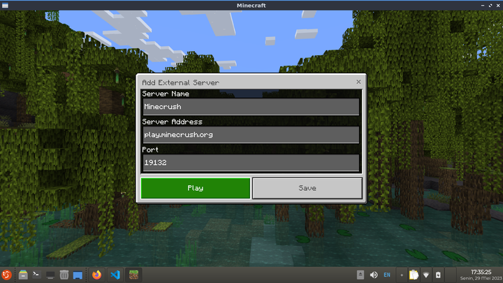
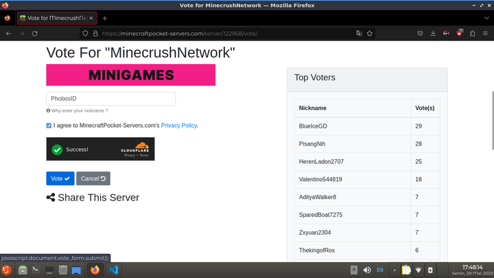
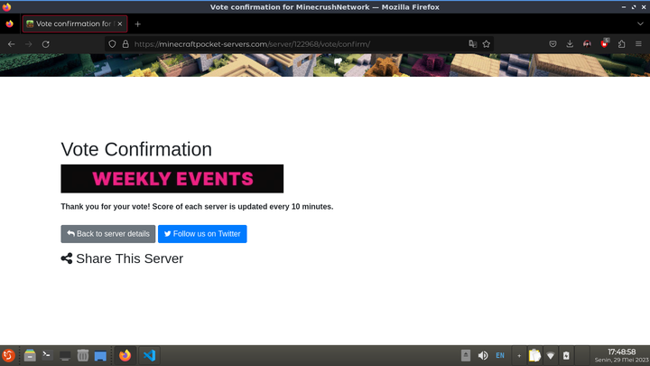
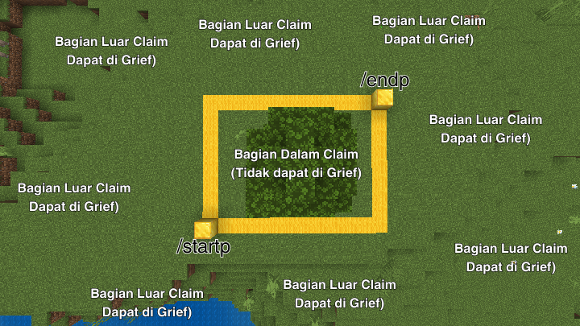

Minecrush Network
Pendahuluan
Terimakasih telah memilih Minecrush Network sebagai salah satu tempat bermain anda di
Minecraft!
Minecrush Network Merupakan Server Minecraft: Bedrock Edition yang berasal dari
Indonesia. Meskipun mayoritas member kami berasal dari Indonesia, kami juga memiliki beberapa pemain dari
luar negeri.
- IP: play.minecrush.org
- Port: Default (19132)
Jangan Lupa untuk Vote Server Kami Setiap Hari! Hadiah Bulanan Menanti. Klik Disini untuk Dialihkan ke Halaman Vote.
Menambah Server
Ikuti Langkah - langkah dibawah ini untuk menambahkan server Minecrush Network pada aplikasi Minecraft anda.
- Buka aplikasi Minecraft Bedrock anda (MCPE, MC Win10)
- Tekan/Pencet "Play", lalu ke bagian "Servers".
- Tekan/Pencet "Add Servers". Isi data di menu "Add External Server" dengan data dibawah ini.
- Server Name: Minecrush
- Server Address: play.minecrush.org
- Port: 19132

- Tekan/Pencet "Play" dan itu saja! Selamat Bermain di Minecrush Network!
Menvote Server
Ikuti Langkah - langkah dibawah ini untuk menvote server Minecrush Network
- Buka Internet Browser anda, boleh Chrome, Safari, Opera, Firefox, Edge, dll.
- Pada bilah alamat, ketik "https://link.minecrush.org/vote", atau klik disini.
- Anda akan diarahkan ke halaman voting. Isi Username/Gamertag anda di bilah yang tersedia. Gamertag/Username nya CaSe SeNsItIvE.
- Selesaikan Captcha, lalu tekan/pencet "Vote".
- Seharusnya halamannya berubah seperti ini.
- Setelah itu, Buka Aplikasi Minecraft Bedrock Edition anda.
- Masuk ke Minecrush Network.
- Buka Menu Chat, ketik /vote.
- Hadiah Vote akan dikirim ke anda.


Claim Lahan Survival
Untuk bermain di Mode Survival, anda harus claim land supaya tidak di grief pemain lain. Hal yang harus anda punya sebelum mengclaim land adalah:
- Lahan Kosong di Survival yang belum di claim ama siapapun.
- Uang Untuk membeli land.
1 Block Lahan seharga 125. Bila anda ingin mengclaim 20x20, anda harus mempunyai 50,000, dan seterusnya. Claim Land hanya bisa dalam bentuk Persegi ataupun Persegi Panjang.
Berikut adalah cara untuk claim land di survival
- Cari Lahan di Survival dengan command /rtp
- Ketik command /startp pada pojok claim pertama. Lalu ketik command /endp pada pojok claim kedua.
- Untuk gambar jelas, anda dapat melihatnya dibawah. Posisi Gold Block adalah Posisi anda saat mengetik command /startp dan /endp, dan Yellow Wool adalah pembatas claim anda dengan wilderness.
- Setelah itu, ketik command /land buy, dan selamat! Anda telah claim land anda. Land anda akan aman dari Grief pemain lain.

Cara Mendapatkan Uang
Ada banyak cara untuk mendapatkan uang. Beberapa diantaranya adalah dengan Mining di tempat Mine, atau farm (Sugar Cane, Melon, Pumpkin, dst) di lahan anda, dan Vote Server setiap hari.
Berikut adalah cara mendapatkan Uang dengan Mining di tempat Mine
- Pastikan anda memiliki Pickaxe untuk Mining.
- Ketik /warp mine pada Menu Chat.
- Anda akan diteleportasikan ke Tempat Mine Server.
- Navigasi ke Daerah dengan banyak ore, mining sepuasnya.
- Jual Hasil Mining anda dengan command /sell
Berikut adalah cara mendapatkan Uang dengan Farming di Lahan Anda
- Pastikan anda memiliki Lahan dan Seed yang telah dibeli.
- Navigasi ke lahan anda, Bangun sebuah farm, ada banyak tutorial di YouTube, jika anda tidak bisa build.
- Gunakan Hoe pada Grass Block/Dirt untuk membuat Farmland. Lalu tanam seed yang anda punya ke Farmland.
- Tunggu dengan AFK saja di daerah land anda. Bila tanaman sudah tumbuh, panen dengan kapak atau hoe.
- Jual Hasil Farming anda dengan command /sell
Cara Mendapatkan Uang dengan Vote Server sudah dijelaskan di atas. Navigasikan saya.
Cara Memperkuat Tools
Tool atau Alat - alat dapat diperkuat sehingga lebih efektif. Tidak terbatas pada alat - alat, senjata seperti Sword/Pedang dan Armor - armor lainnya juga dapat diperkuat.
Berikut adalah cara bagaimana memperkuat alat - alat
- Pastikan anda memiliki uang dan alat atau senjata atau armor untuk diperkuat.
- Ketik /eshop atau /es pada Menu Chat.
- Menu Enchant akan Muncul, dan Pilih alat/senjata/armor untuk diperkuat.
- Pilih enchantment yang ingin ditambah.
- Pilih level enchantment yang anda inginkan.
- Klik "Buy" dan Enchant akan segera ditambahkan kedalam alat/senjata/armor anda.
Cara Memperbaiki Tools
Tool atau Alat - alat, juga seperti world singleplayer Minecraft pada umumnya. Yaitu memiliki Durability. Jika Durability dari alat/senjata/armor menyentuh 0, maka alat tersebut rusak dan hilang di inventory. Tentu saja anda tidak ingin hal tersebut terjadi pada alat kesayangan anda yang telah anda perkuat sampai maksimal. Anda dapat membeli enchant Mending untuk membuat Durability regenerasi sampai maksimum, namun itu membutuhkan Exp Orb.
Berikut adalah cara bagaimana memperbaiki alat - alat secara instan
- Pastikan anda memiliki uang dan alat atau senjata atau armor untuk diperbaiki.
- Ketik /anvil pada Menu Chat.
- Menu Anvil akan Muncul, Pilih "Repair", dan Pilih alat/senjata/armor untuk diperbaiki.
- Semakin kecil durabilitas sebuah alat, maka akan semakin mahal biaya untuk memperbaiki.
- Klik "Repair" dan alat kesayangan anda telah diperbaiki hingga durabilitas maksimum.
Pembelian Barang dengan Uang Asli
Pembelian Barang dalam bentuk Rank ataupun Custom Enchant, melibatkan penggunaan Uang Asli. Pembelian dianggap sebagai Donasi dan tidak dapat di-refund/dikembalikan.
Rank Server
Rank Server merupakan salah satu dari produk kami. Kami memberikan perk lebih dari member biasa sebagai tanda terimakasih kami telah berdonasi kepada Minecrush Network agar server berjalan terus.
Cek selengkapnya pada: Klik Disini
Custom Enchant
Custom Enchant merupakan Enchant yang lebih kuat daripada enchant yang biasanya dibeli melalui command /es. Anda dapat mendapatkan Custom Enchant dari pembelian rank Sentinel keatas, ataupun membuka crate-in-game (dengan kunci dapat dibeli dengan uang server).
Cek selengkapnya Pada: Klik Disini
Komunitas Server
Kami memiliki komunitas yang berisi pemain server ini. Kami memiliki 4 grup komunitas, WhatsApp, Telegram, Discord, dan Guilded. Anda dipersilahkan untuk join salah satu atau semuanya. Mari bersosialisasi dan dapatkan teman baru!
Berikut adalah aturan yang berlaku pada seluruh komunitas MCN untuk seluruh member dan staff.
- Dilarang Toxic (Berbicara Kasar, dll)
- Dilarang Spam Chat
- Dilarang Mengirim Pesan yang dapat menyebabkan Lag dan Forceclose seperti virtex dan 'wa.me/settings'
- Dilarang Membahas hal yang bersifat menyudutkan, apalagi menghina suku, adat, ras, agama, dan etnis tertentu
- Dilarang Mengirim atau menyebarkan Foto, Video, dan Sticker yang Gore, Sadis, Offensive, Hoax, dan Pornografi
- Dilarang Mengirim atau menyebarkan Pesan atau Link yang bersifat Penipuan, Scam, dan Phising
- Tidak ada Limit Sticker per Hari, Namun Dilarang Keras untuk spam Sticker
- Dilarang Mempromosikan Server Lain atau mengajak member grup ke server lain
- Dilarang berpura - pura atau mengakui diri sendiri sebagai staff Minecrush
- Posting Iklan atau Jualan Maksimal 1 kali per hari
- Dilarang Spam Command Bot
Grup WhatsApp
Grup WhatsApp Server Minecrush memiliki penghuni terbanyak daripada ketiga komunitas lainnya.
Masuk Ke WhatsApp Grup: Klik Disini
Grup Telegram
Grup Telegram Minecrush memiliki penghuni yang lumayan sedikit. Penampilan seperti WhatsApp, dengan Bot Helper Telegram yang senantiasa membantu.
Masuk Ke Telegram Grup: Klik Disini
Server Discord
Server Discord Minecrush Biasanya digunakan untuk Event dan Giveaway, berisi campuran pemain yang berasal dari Indonesia dan Luar Negeri. Jika anda tidak ingin nomor HP anda publik, maka anda dapat bergabung di Discord Minecrush.
Masuk Ke Server Discord: Klik Disini
Server Guilded
Server Guilded Minecrush merupakan komunitas yang baru dibuat. Penampilan seperti Discord. Belum ada anggota yang bergabung, anda bisa jadi yang pertama untuk gabung!
Masuk Ke Server Guilded: Klik Disini
Peraturan Server
Berisi tentang Peraturan Server dalam Game yang anda wajib patuhi!
Aturan Server Survival
Berikut adalah Aturan tertulis server Survival yang wajib dipatuhi oleh pemain Survival.
| Peraturan | Hukuman |
|---|---|
| Dilarang memindahkan semua pemain ke Anda | Ban Permanen |
| Dilarang berduka dan mencuri item | Ban 30 Hari, Setel Ulang Uang & Inventaris |
| Dilarang Teleport pemain lain ke dirimu sendiri dan bunuh mereka (TP-Kill) atau sebaliknya | Ban 7 Hari, Reset uang, Hapus Faction & /tp perintah dihapus dari akun Anda |
| Dilarang menjebak lalu membunuh pemain lain (contoh: Anda menyuruh pemain lain pergi ke "/pwarp x" lalu saat mereka berteleportasi, Anda membunuh mereka) | Ban 7 Hari, Reset uang, Hapus Faction & perintah terkait dihapus dari akun Anda |
| GameBoost (GB) tidak diizinkan | Ban 7 Hari, Reset uang, Hapus Faction |
| Dilarang menggunakan /nick (pemain/staf lain) tanpa izin | Larang 3 Hari & hapus perintah /nick dari akun Anda |
| Dilarang pukul pemain dari zona aman (Arena / dunia tempat pvp aktif) | Warning, Take-Item, Reset-Uang |
| Dilarang spam /say atau /me di server | Warn-Kick-Money reset & hapus perintah /say atau /me dari akun Anda |
| Dilarang spam atau penyalahgunaan /ukuran | Warn-Kick-Money reset & hapus perintah /size dari akun Anda |
| Faction dilarang memiliki pemimpin yang peringkatnya di bawah Phoenix | Faction Penghapusan Paksa |
| Dilarang membangun farm di dunia Plot & Mendekati bibit di dunia Survival | Plot Anda akan dihapus |
Aturan Server Skyblock
Berikut adalah Aturan tertulis server Skyblock yang wajib dipatuhi oleh pemain Skyblock.
| Peraturan | Hukuman |
|---|---|
| Segera | Hadir |
| Segera | Hadir |
Aturan Server Oneblock
Berikut adalah Aturan tertulis server Oneblock yang wajib dipatuhi oleh pemain Oneblock.
| Peraturan | Hukuman |
|---|---|
| Jangan gunakan auto clicker di server OneBlock | Ban 7 Hari , Island Reset , Money & Inventory reset |
| Jangan AFK di dalam server dan/atau island Oneblock (staff akan cek), -- Jika mau AFK, ketik /transfer lobby dulu | Kick-Ban 3 Hari |
| Jangan menumpukkan mob dalam island anda (staff akan cek), -- Tolong langsung bunuh mob di dalam island mu | Warn-Kick-Ban 3 Hari |